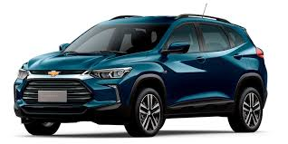

caniches
caniches
caniches
2) Crear una ordered list con 3 items.
- nisan
- ford
- chevrolet
3) Crear una unordered list con 3 items.
- leche
- manzana
- frutilla
4) Crear 2
, dentro de cada div: agregar una imagen, un h2 para mostrar un titulo para esa imagen y un Diseño exclusivo, detalles que marcan la diferencia y toda la tecnología necesaria para llevarte por nuevos y mejores caminos.
>Su gran despeje del suelo y sus nuevos faros C-Shape le otorgan una actitud
intrépida que junto a las luces LED traseras, trazan una línea que resalta el
movimiento. Un auto diseñado a la altura de lo que te propongas.
5) Crear 3 enlaces/links apuntando a sitios diferentes.
Chevrolet
Turner
Mapaci
6) Crear menú de navegación
con breve descripcion.

Traker
>
Sandero
5) Crear 3 enlaces/links apuntando a sitios diferentes.
Chevrolet
Turner
Mapaci
6) Crear menú de navegación